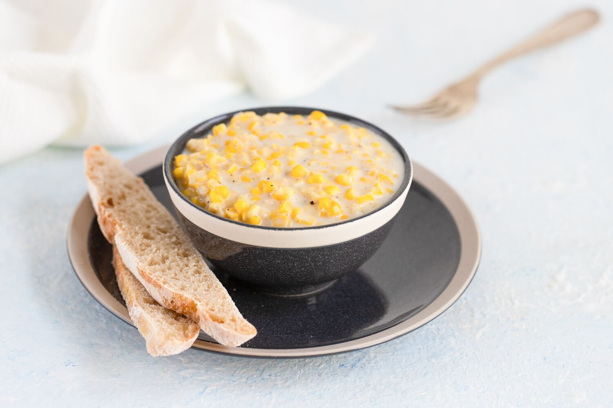

Creamed Corn
Description
This homemade creamed corn recipe is an excellent side dish for both Thanksgiving and Christmas.
Ingredients
- 0.5 cup butter
- 2 tablespoons all-purpose flour
- 2 (16 ounce) packages frozen corn kernels
- 1 pint half-and-half cream
- 1 pint heavy cream
- 1 teaspoon salt
- 1.5 tablespoons white sugar
- 1 cup grated Romano cheese
Directions
- Preheat oven to 325 degrees F (165 degrees C).
- In a large pot over medium heat, melt the butter and blend together with the flour.
- Add the corn, half and half, whipping cream, salt and sugar. Stir and heat until mixture begins to thicken.
- Stir in cheese and pour into a 2 quart casserole dish. Bake for 15 to 20 minutes.